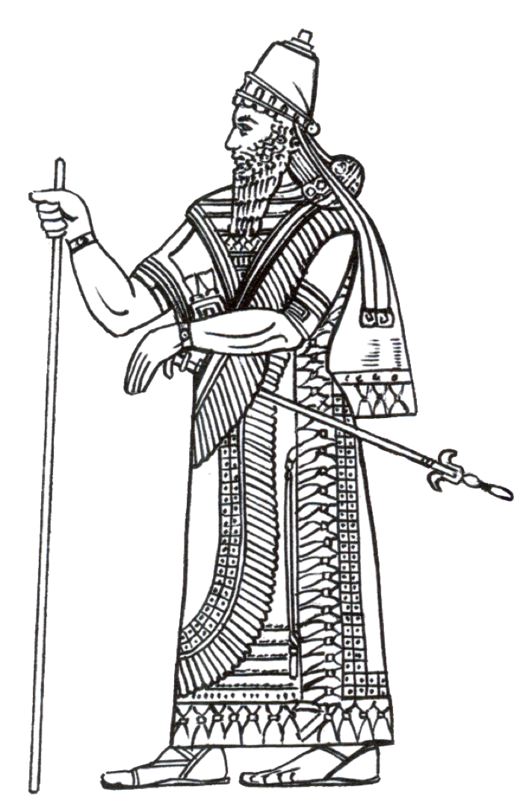

Home Page
Map
Articles
Log in
Interaktywna mapa!
Sprawdź jak zmieniał się bliski wschód na przestrzeni tysięcy lat
Prominentne Starożytne Cywilizacje Bliskiego Wschodu
Asyria
Królestwo północnej mezopotamii
21 wiek p.n.e - 7 wiek p.n.e
Stolica
Aszur

Babilonia
Królestwo świętego miasta Babilon
19 wiek p.n.e - 6 wiek p.n.e
Stolica
Babilon
Egipt
Królestwo dwóch ziem
32 wiek p.n.e - 4 wiek p.n.e
Stolica
Memfis, Teby
Poznaj najnowsze artykuły ze świata archeologii
Najstarsza choroba świata. Król z depresją.
Najstarsza choroba świata. Król z depresją.